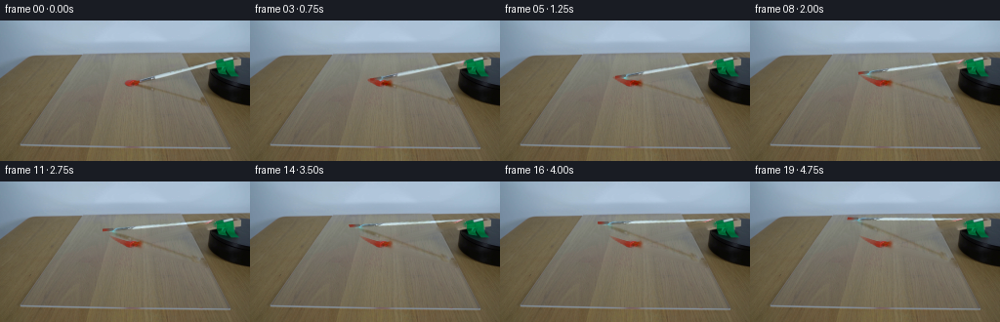
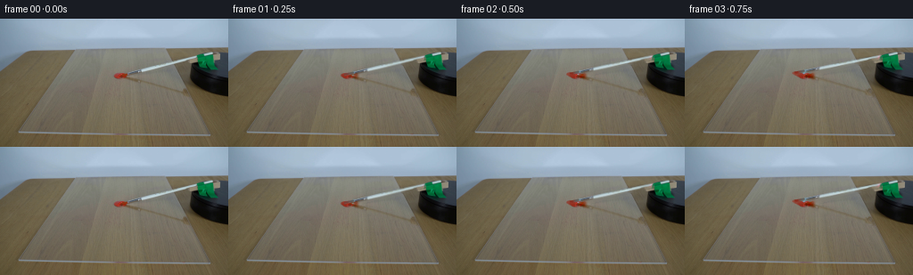
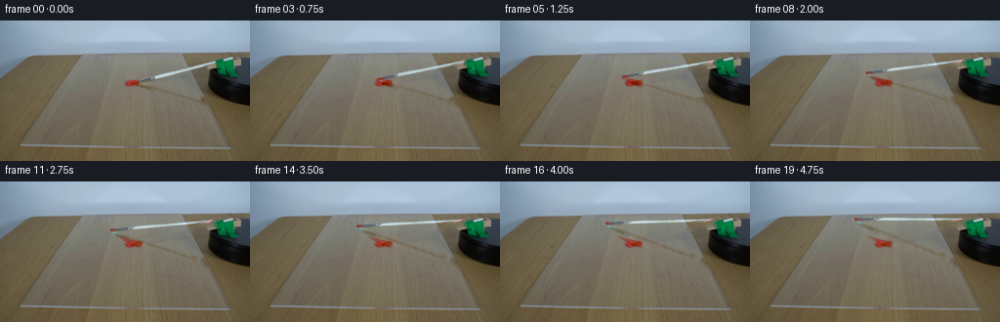
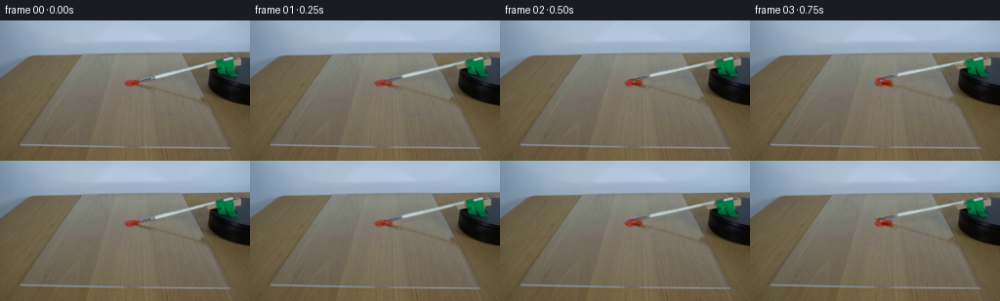
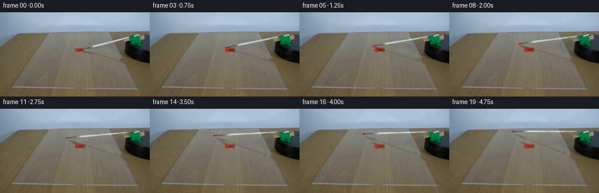
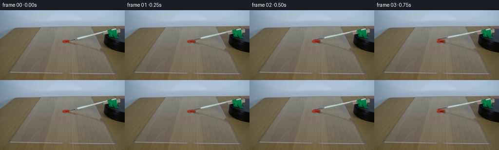

CODING AGENTS AS PIXEL WORLD MODELS
traex/GPT-6.1-Sol · 0131
点击播放 · 原生 RGB 像素
逐轮保存的候选
回放视频、检查图与代码变化。
每份候选均可单独播放。实际图片检查记录在下方工具轨迹中。
候选 01播放与检查图
点击播放 · 原生 RGB 像素


展开代码变化
--- 上一保存版本
+++ 本次保存版本
@@ -0,0 +1,160 @@
+from pathlib import Path
+import numpy as np
+import cv2
+from PIL import Image
+import artifact_io
+
+ROOT = Path(__file__).resolve().parent
+W, H = 256, 144
+Y, X = np.mgrid[:H, :W].astype(np.float32)
+
+
+def capsule(p, q, radius):
+ p, q = np.array(p, float), np.array(q, float)
+ v = q-p
+ t = np.clip(((X-p[0])*v[0]+(Y-p[1])*v[1])/np.dot(v,v),0,1)
+ d = np.sqrt((X-p[0]-t*v[0])**2+(Y-p[1]-t*v[1])**2)
+ return np.clip(radius+.6-d,0,1), t
+
+
+def affine_warp(a, mat, offset):
+ m = np.concatenate([mat, offset[:,None]],axis=1).astype(np.float32)
+ return cv2.warpAffine(a, m, (W,H), flags=cv2.INTER_LINEAR,
+ borderMode=cv2.BORDER_CONSTANT, borderValue=0)
+
+
+def generate():
+ original = np.asarray(Image.open(ROOT/'first_frame.png').convert('RGB'))
+ src = original.astype(np.float32)
+ pivot = np.array([236.,38.7])
+ tip0 = np.array([133.,63.9])
+ squash = .28
+ # Silver handle and short, darker ferrule, just above the surface.
+ handle_mask,_ = capsule([143.,61.5],[221.,42.35],2.8)
+ handle_mask *= ((X>=142)&(X<=221)).astype(np.float32)
+ # The paint itself is a stationary surface object, not part of the handle.
+ red = ((src[:,:,0]>src[:,:,1]*1.45)&(src[:,:,0]>src[:,:,2]*1.4)&(src[:,:,0]>100))
+ handle_mask[red]=0
+ # The long, soft shadow joins the bristles to the raised mount.
+ shadow_root = np.array([236.,91.])
+ shadow_tip0 = np.array([137.,66.])
+ shadow_mask, st = capsule(shadow_tip0,shadow_root,3.5)
+ shadow_mask *= ((X>141)&(X<212)).astype(np.float32)
+ shadow_mask[red]=0
+ # Keep the upright green spindle and the black supporting platform fixed.
+ occluder = ((X>=221)&(X<=244)&(Y>=40)&(Y<=57))
+ shadow_mask[occluder]=0
+ handle_mask[occluder]=0
+ all_mask = np.maximum(handle_mask,shadow_mask)
+ clean = cv2.inpaint(original,(all_mask>0.025).astype(np.uint8)*255,4,cv2.INPAINT_TELEA).astype(np.float32)
+ shaft_residual = (src-clean)*handle_mask[:,:,None]
+ shadow_residual = (src-clean)*shadow_mask[:,:,None]
+ # Inpainting gives the transparent sheet its original wood-grain background.
+ # Extracted optical differences retain the real photographic handle texture.
+ green = ((src[:,:,1]>src[:,:,0]+25)&(src[:,:,1]>src[:,:,2]+15)&(X>217)&(Y>38)&(Y<60))
+ mount = (green | ((X>=224)&(X<=243)&(Y>=54)&(Y<=59)))
+ spindle_cap = (((X-235.3)/5.2)**2+((Y-38.7)/1.5)**2<1)
+ mount |= spindle_cap
+ rng = np.random.default_rng(131)
+ grain = cv2.GaussianBlur(rng.normal(0,1,(H,W)).astype(np.float32),(0,0),.45)
+ np.save(ROOT/'.tmp'/'clean_plate.npy',clean)
+ Image.fromarray(np.clip(clean,0,255).astype(np.uint8)).save(ROOT/'.tmp'/'clean_plate.png')
+ frames=[original.copy()]
+
+ world_tip = np.array([tip0[0]-pivot[0],(tip0[1]-pivot[1])/squash])
+ final_angle=np.deg2rad(43.)
+
+ def projected_tip(theta):
+ co,si=np.cos(theta),np.sin(theta)
+ z=np.array([[co,-si],[si,co]])@world_tip
+ return pivot+z*np.array([1.,squash])
+
+ # A short paint ribbon is deposited by the flexible, loaded brush bristles.
+ # Its center follows the same circular motion as the end of the brush.
+ def paint_ribbon(canvas, theta):
+ max_a=min(theta,.285)
+ if max_a<=0: return canvas
+ ribbon=np.zeros((H,W),np.float32)
+ shine=np.zeros_like(ribbon)
+ n=80
+ for a in np.linspace(0,max_a,n):
+ p=projected_tip(a)
+ progress=a/.285
+ # Paint runs out gradually; the trace has an irregular feathered end.
+ width=(2.25*(1-progress)**.8+.20)
+ width*=1+.09*np.sin(a*161)
+ dx=(X-p[0])
+ dy=(Y-p[1]-.35)
+ dist=(dx*dx*.35+dy*dy)**.5
+ edge=np.clip(width+.55-dist,0,1)
+ coverage=(.82-.65*progress**1.2)*edge
+ ribbon=np.maximum(ribbon,coverage)
+ glint=np.exp(-(dy+width*.36)**2/.20)*np.exp(-dx*dx/4)*(.18*(1-progress))
+ shine=np.maximum(shine,glint)
+ # Keep the original convex paint bead except for a little material drawn
+ # off its leading (left) edge into the trace.
+ bead=((X-135.5)/7.6)**2+((Y-64.)/3.3)**2
+ ribbon*=np.where((bead<1)&(X>132),.15,1.)
+ color=np.empty_like(canvas)
+ color[:,:,0]=146+4*grain
+ color[:,:,1]=44+2*grain
+ color[:,:,2]=28+2*grain
+ canvas=canvas*(1-ribbon[:,:,None])+color*ribbon[:,:,None]
+ canvas+=shine[:,:,None]*np.array([30.,23.,17.])
+ return canvas
+
+ # The brush makes one continuous clockwise sweep. The strongly foreshortened
+ # tabletop makes its circular trajectory an ellipse in the locked image.
+ for i in range(1,20):
+ theta=final_angle*i/19
+ co,si=np.cos(theta),np.sin(theta)
+ mat=np.array([[co,-si/squash],[squash*si,co]])
+ tip=projected_tip(theta)
+ f=clean.copy()
+ # Re-project the actual soft shadow, while leaving the motor shadow fixed.
+ sh_tip=tip+np.array([4.,2.1])
+ oldv=shadow_tip0-shadow_root
+ newv=sh_tip-shadow_root
+ oldn=np.array([-oldv[1],oldv[0]])/np.linalg.norm(oldv)
+ newn=np.array([-newv[1],newv[0]])/np.linalg.norm(newv)
+ shmat=np.column_stack((newv,newn))@np.linalg.inv(np.column_stack((oldv,oldn)))
+ shdelta=affine_warp(shadow_residual,shmat,shadow_root-shmat@shadow_root)
+ shdelta[X>212]=0
+ f+=shdelta
+ f=paint_ribbon(f,theta)
+ d=affine_warp(shaft_residual,mat,pivot-mat@pivot)
+ f+=d
+ # The free end consists of short bristles; the distal few millimeters
+ # carry red pigment after crossing the dollop.
+ # The ferrule is part of the sampled original image above.
+ vec=tip-pivot
+ u=vec/np.linalg.norm(vec)
+ normal=np.array([-u[1],u[0]])
+ near=tip-u*10.0
+ br, tt=capsule(near,tip,1.25)
+ length=np.linalg.norm(tip-near)
+ longitudinal=((X-near[0])*u[0]+(Y-near[1])*u[1])
+ lateral=(X-tip[0])*normal[0]+(Y-tip[1])*normal[1]
+ # Trim the rounded end into a flat, subtly uneven brush edge.
+ br*=np.clip((length+.4+.3*np.sin(lateral*7)-longitudinal)*1.6,0,1)
+ loading=np.clip(theta/.07,0,1)
+ paintpart=np.clip((tt-.20)/.50,0,1)*loading
+ strand=(np.sin(lateral*10+tt*5)+np.sin(lateral*17-tt*3))*.8
+ dry=np.stack([91+strand,91+strand,88+strand],axis=-1)
+ wet=np.stack([133+strand*2,42+strand,29+strand],axis=-1)
+ brushcol=dry*(1-paintpart[:,:,None])+wet*paintpart[:,:,None]
+ # Slightly splayed bristles, with a dim highlight on the ferrule side.
+ brushcol += np.exp(-(lateral+.65)**2/.12)[:,:,None]*np.array([13,10,8])
+ alpha=br*.88
+ f=f*(1-alpha[:,:,None])+brushcol*alpha[:,:,None]
+ # Restore the photographed mount, including its specular screw cap.
+ f[mount]=src[mount]
+ frames.append(np.clip(np.rint(f),0,255).astype(np.uint8))
+ return np.stack(frames)
+
+
+if __name__=='__main__':
+ (ROOT/'.tmp').mkdir(exist_ok=True)
+ frames=generate()
+ assert np.array_equal(frames[0],np.asarray(Image.open(ROOT/'first_frame.png').convert('RGB')))
+ artifact_io.save(frames,ROOT)
候选 02播放与检查图
点击播放 · 原生 RGB 像素


展开代码变化
--- 上一保存版本
+++ 本次保存版本
@@ -27,7 +27,7 @@
original = np.asarray(Image.open(ROOT/'first_frame.png').convert('RGB'))
src = original.astype(np.float32)
pivot = np.array([236.,38.7])
- tip0 = np.array([133.,63.9])
+ tip0 = np.array([140.5,63.2])
squash = .28
# Silver handle and short, darker ferrule, just above the surface.
handle_mask,_ = capsule([143.,61.5],[221.,42.35],2.8)
@@ -112,7 +112,7 @@
tip=projected_tip(theta)
f=clean.copy()
# Re-project the actual soft shadow, while leaving the motor shadow fixed.
- sh_tip=tip+np.array([4.,2.1])
+ sh_tip=tip+np.array([-3.5,2.8])
oldv=shadow_tip0-shadow_root
newv=sh_tip-shadow_root
oldn=np.array([-oldv[1],oldv[0]])/np.linalg.norm(oldv)
@@ -130,17 +130,17 @@
vec=tip-pivot
u=vec/np.linalg.norm(vec)
normal=np.array([-u[1],u[0]])
- near=tip-u*10.0
- br, tt=capsule(near,tip,1.25)
+ near=tip-u*16.0
+ br, tt=capsule(near,tip,1.30)
length=np.linalg.norm(tip-near)
longitudinal=((X-near[0])*u[0]+(Y-near[1])*u[1])
lateral=(X-tip[0])*normal[0]+(Y-tip[1])*normal[1]
# Trim the rounded end into a flat, subtly uneven brush edge.
br*=np.clip((length+.4+.3*np.sin(lateral*7)-longitudinal)*1.6,0,1)
loading=np.clip(theta/.07,0,1)
- paintpart=np.clip((tt-.20)/.50,0,1)*loading
+ paintpart=np.clip((tt-.40)/.50,0,1)*loading
strand=(np.sin(lateral*10+tt*5)+np.sin(lateral*17-tt*3))*.8
- dry=np.stack([91+strand,91+strand,88+strand],axis=-1)
+ dry=np.stack([93+strand,98+strand,105+strand],axis=-1)
wet=np.stack([133+strand*2,42+strand,29+strand],axis=-1)
brushcol=dry*(1-paintpart[:,:,None])+wet*paintpart[:,:,None]
# Slightly splayed bristles, with a dim highlight on the ferrule side.
候选 03播放与检查图
点击播放 · 原生 RGB 像素


展开代码变化
--- 上一保存版本
+++ 本次保存版本
@@ -47,8 +47,14 @@
handle_mask[occluder]=0
all_mask = np.maximum(handle_mask,shadow_mask)
clean = cv2.inpaint(original,(all_mask>0.025).astype(np.uint8)*255,4,cv2.INPAINT_TELEA).astype(np.float32)
- shaft_residual = (src-clean)*handle_mask[:,:,None]
- shadow_residual = (src-clean)*shadow_mask[:,:,None]
+ # Narrow optical matte excludes the sheet and the reflected paint rim.
+ silver_matte,_ = capsule([158.,58.2],[221.,42.35],2.45)
+ ferrule_matte,_ = capsule([143.,61.0],[158.,57.8],1.65)
+ optical_matte=np.maximum(silver_matte,ferrule_matte)*handle_mask
+ optical_matte[red]=0
+ shaft_residual = (src-clean)*optical_matte[:,:,None]
+ darkening=np.clip((clean.mean(2)-src.mean(2)),0,28)*shadow_mask
+ shadow_residual = -darkening[:,:,None]*np.array([1.,.87,.70],dtype=np.float32)
# Inpainting gives the transparent sheet its original wood-grain background.
# Extracted optical differences retain the real photographic handle texture.
green = ((src[:,:,1]>src[:,:,0]+25)&(src[:,:,1]>src[:,:,2]+15)&(X>217)&(Y>38)&(Y<60))
可观测工具轨迹
实际执行的命令与返回图片。
命令 1exit 0
/bin/bash -lc "ls -la && cat prompt.txt && printf '\\n--- RULES ---\\n' && cat GENERATION_RULES.md"
命令 2exit 0
/bin/bash -lc "cat artifact_io.py && python - <<'PY'
from PIL import Image
import numpy as np
im=np.array(Image.open('first_frame.png'))
print(im.shape)
print('samples')
for y in range(0,144,4):
print(f'{y:3}', ''.join('R' if r>g*1.5 and r>b*1.5 and r>100 else '#' if max(r,g,b)<45 else '+' if max(r,g,b)<85 else ':' if max(r,g,b)<140 else 'w' if min(r,g,b)>185 else '.' for r,g,b in im[y,::3]))
PY"命令 3exit 0
/bin/bash -lc "python - <<'PY'
from PIL import Image
import numpy as np
im=np.array(Image.open('first_frame.png'))
# Detail with luminance and warm coloring
for y in range(30,91):
s=''
for x in range(110,256):
r,g,b=im[y,x].astype(float);lum=(r+g+b)/3
if r>g*1.4 and r>b*1.4 and r>90: c='R'
elif lum>220:c='@'
elif lum>190:c='W'
elif lum>170:c='O'
elif lum>145:c='o'
elif lum>125:c=';'
elif lum>100:c=':'
elif lum>80:c='='
elif lum>60:c='-'
elif lum>40:c='+'
elif lum>25:c='X'
else:c='#'
s+=c
print(f'{y:3} {s}')
print('pixel rows')
for y in range(40,67,2):
print(y, [(x,im[y,x].tolist()) for x in range(150,236,3)])
PY"命令 4exit 0
/bin/bash -lc "python - <<'PY'
import numpy as np
from PIL import Image
im=np.array(Image.open('first_frame.png')).astype(float)
print('Color-coded crop x120..255, y32..73')
for y in range(32,74):
s=''
for x in range(120,256):
r,g,b=im[y,x];l=(r+g+b)/3
if r>1.6*g and r>1.5*b and r>80: c='R'
elif g>r*1.8 and g>b*1.2:c='G'
elif b>r+8 and g>r+6 and l>150:c='S'
elif b>r+8 and g>r+6:c='s'
elif min(r,g,b)>180:c='W'
elif l<30:c='#'
elif l<65:c='+'
elif l<90:c='-'
elif l<115:c=':'
elif l<145:c='.'
else:c='o'
s+=c
print(f'{y:2} {s}')
print('Red pixels bounds')
m=(im[:,:,0]>im[:,:,1]*1.6)&(im[:,:,0]>im[:,:,2]*1.5)&(im[:,:,0]>80)
y,x=np.where(m); print(x.min(),x.max(),y.min(),y.max(),im[m].mean(0))
print('Green pixels bounds')
m=(im[:,:,1]>im[:,:,0]*1.8)&(im[:,:,1]>im[:,:,2]*1.2)
y,x=np.where(m);print(x.min(),x.max(),y.min(),y.max())
PY"命令 5exit 0
/bin/bash -lc "python - <<'PY'
import numpy as np
from PIL import Image
im=np.array(Image.open('first_frame.png'))
for y in range(54,68):
print(y)
for x in range(130,163):
print(f'{x}:{\",\".join(map(str,im[y,x]))}',end=' ')
print()
PY"命令 6exit 0
/bin/bash -lc "python - <<'PY'
from PIL import Image
import numpy as np
im=np.array(Image.open('first_frame.png')).astype(float)
for y in range(35,64):
r,g,b=im[y].T
green=np.flatnonzero((g>r+25)&(g>b+15))
silver=np.flatnonzero((b>r+7)&(g>r+6)&(b>150))
print(y,'green',((green[0],green[-1]) if len(green) else None),'silver',((silver[0],silver[-1]) if len(silver) else None))
for y in range(36,60):
print(f'{y:2}', [(x, im[y,x].astype(int).tolist()) for x in range(218,248,2)])
PY"命令 7exit 0
/bin/bash -lc "python - <<'PY'
import numpy as np
from PIL import Image
im=np.array(Image.open('first_frame.png')).astype(float)
# Coordinates along brush; probe perpendicular profile
p=np.array([237.,38.6]);q=np.array([142.3,62.3]);v=q-p;L=np.linalg.norm(v);u=v/L;n=np.array([-u[1],u[0]])
for s in [0,.1,.2,.3,.4,.5,.6,.7,.75,.8,.85,.9,.95,1]:
c=p+v*s
print('s',s,'c',c.round(1),[(a,im[int(round((c+n*a)[1])),int(round((c+n*a)[0]))].astype(int).tolist()) for a in range(-5,6)])
PY"命令 8exit 0
/bin/bash -lc "python - <<'PY'
from PIL import Image
import numpy as np
im=np.array(Image.open('first_frame.png'))
print('global 2pixel map')
for y in range(0,144,2):
s=''
for x in range(0,256,2):
r,g,b=im[y,x].astype(float);l=(r+g+b)/3
if r>g*1.5 and r>b*1.5 and r>100:c='R'
elif g>r+25 and g>b+15:c='G'
elif b>r+8 and g>r+6 and l>150:c='S'
elif b>r+8 and g>r+6:c='s'
elif min(r,g,b)>180:c='W'
elif l<30:c='#'
elif l<65:c='+'
elif l<90:c='-'
elif l<115:c=':'
elif l<145:c='.'
else:c='o'
s+=c
print(f'{y:3} {s}')
PY"命令 9exit 0
/bin/bash -lc "python - <<'PY' import importlib.util for x in ['numpy','scipy','cv2','PIL']:print(x,bool(importlib.util.find_spec(x))) PY"
命令 10exit 0
/bin/bash -lc "cat > generate.py <<'PY'
from pathlib import Path
import numpy as np
import cv2
from PIL import Image
import artifact_io
ROOT = Path(__file__).resolve().parent
W, H = 256, 144
Y, X = np.mgrid[:H, :W].astype(np.float32)
def capsule(p, q, radius):
p, q = np.array(p, float), np.array(q, float)
v = q-p
t = np.clip(((X-p[0])*v[0]+(Y-p[1])*v[1])/np.dot(v,v),0,1)
d = np.sqrt((X-p[0]-t*v[0])**2+(Y-p[1]-t*v[1])**2)
return np.clip(radius+.6-d,0,1), t
def affine_warp(a, mat, offset):
m = np.concatenate([mat, offset[:,None]],axis=1).astype(np.float32)
return cv2.warpAffine(a, m, (W,H), flags=cv2.INTER_LINEAR,
borderMode=cv2.BORDER_CONSTANT, borderValue=0)
def generate():
original = np.asarray(Image.open(ROOT/'first_frame.png').convert('RGB'))
src = original.astype(np.float32)
pivot = np.array([236.,38.7])
tip0 = np.array([133.,63.9])
squash = .28
# Silver handle and short, darker ferrule, just above the surface.
handle_mask,_ = capsule([143.,61.5],[221.,42.35],2.8)
handle_mask *= ((X>=142)&(X<=221)).astype(np.float32)
# The paint itself is a stationary surface object, not part of the handle.
red = ((src[:,:,0]>src[:,:,1]*1.45)&(src[:,:,0]>src[:,:,2]*1.4)&(src[:,:,0]>100))
handle_mask[red]=0
# The long, soft shadow joins the bristles to the raised mount.
shadow_root = np.array([236.,91.])
shadow_tip0 = np.array([137.,66.])
shadow_mask, st = capsule(shadow_tip0,shadow_root,3.5)
shadow_mask *= ((X>141)&(X<212)).astype(np.float32)
shadow_mask[red]=0
# Keep the upright green spindle and the black supporting platform fixed.
occluder = ((X>=221)&(X<=244)&(Y>=40)&(Y<=57))
shadow_mask[occluder]=0
handle_mask[occluder]=0
all_mask = np.maximum(handle_mask,shadow_mask)
clean = cv2.inpaint(original,(all_mask>0.025).astype(np.uint8)*255,4,cv2.INPAINT_TELEA).astype(np.float32)
shaft_residual = (src-clean)*handle_mask[:,:,None]
shadow_residual = (src-clean)*shadow_mask[:,:,None]
# Inpainting gives the transparent sheet its original wood-grain background.
# Extracted optical differences retain the real photographic handle texture.
green = ((src[:,:,1]>src[:,:,0]+25)&(src[:,:,1]>src[:,:,2]+15)&(X>217)&(Y>38)&(Y<60))
mount = (green | ((X>=224)&(X<=243)&(Y>=54)&(Y<=59)))
spindle_cap = (((X-235.3)/5.2)**2+((Y-38.7)/1.5)**2<1)
mount |= spindle_cap
rng = np.random.default_rng(131)
grain = cv2.GaussianBlur(rng.normal(0,1,(H,W)).astype(np.float32),(0,0),.45)
np.save(ROOT/'.tmp'/'clean_plate.npy',clean)
Image.fromarray(np.clip(clean,0,255).astype(np.uint8)).save(ROOT/'.tmp'/'clean_plate.png')
frames=[original.copy()]
world_tip = np.array([tip0[0]-pivot[0],(tip0[1]-pivot[1])/squash])
final_angle=np.deg2rad(43.)
def projected_tip(theta):
co,si=np.cos(theta),np.sin(theta)
z=np.array([[co,-si],[si,co]])@world_tip
return pivot+z*np.array([1.,squash])
# A short paint ribbon is deposited by the flexible, loaded brush bristles.
# Its center follows the same circular motion as the end of the brush.
def paint_ribbon(canvas, theta):
max_a=min(theta,.285)
if max_a<=0: return canvas
ribbon=np.zeros((H,W),np.float32)
shine=np.zeros_like(ribbon)
n=80
for a in np.linspace(0,max_a,n):
p=projected_tip(a)
progress=a/.285
# Paint runs out gradually; the trace has an irregular feathered end.
width=(2.25*(1-progress)**.8+.20)
width*=1+.09*np.sin(a*161)
dx=(X-p[0])
dy=(Y-p[1]-.35)
dist=(dx*dx*.35+dy*dy)**.5
edge=np.clip(width+.55-dist,0,1)
coverage=(.82-.65*progress**1.2)*edge
ribbon=np.maximum(ribbon,coverage)
glint=np.exp(-(dy+width*.36)**2/.20)*np.exp(-dx*dx/4)*(.18*(1-progress))
shine=np.maximum(shine,glint)
# Keep the original convex paint bead except for a little material drawn
# off its leading (left) edge into the trace.
bead=((X-135.5)/7.6)**2+((Y-64.)/3.3)**2
ribbon*=np.where((bead<1)&(X>132),.15,1.)
color=np.empty_like(canvas)
color[:,:,0]=146+4*grain
color[:,:,1]=44+2*grain
color[:,:,2]=28+2*grain
canvas=canvas*(1-ribbon[:,:,None])+color*ribbon[:,:,None]
canvas+=shine[:,:,None]*np.array([30.,23.,17.])
return canvas
# The brush makes one continuous clockwise sweep. The strongly foreshortened
# tabletop makes its circular trajectory an ellipse in the locked image.
for i in range(1,20):
theta=final_angle*i/19
co,si=np.cos(theta),np.sin(theta)
mat=np.array([[co,-si/squash],[squash*si,co]])
tip=projected_tip(theta)
f=clean.copy()
# Re-project the actual soft shadow, while leaving the motor shadow fixed.
sh_tip=tip+np.array([4.,2.1])
oldv=shadow_tip0-shadow_root
newv=sh_tip-shadow_root
oldn=np.array([-oldv[1],oldv[0]])/np.linalg.norm(oldv)
newn=np.array([-newv[1],newv[0]])/np.linalg.norm(newv)
shmat=np.column_stack((newv,newn))@np.linalg.inv(np.column_stack((oldv,oldn)))
shdelta=affine_warp(shadow_residual,shmat,shadow_root-shmat@shadow_root)
shdelta[X>212]=0
f+=shdelta
f=paint_ribbon(f,theta)
d=affine_warp(shaft_residual,mat,pivot-mat@pivot)
f+=d
# The free end consists of short bristles; the distal few millimeters
# carry red pigment after crossing the dollop.
# The ferrule is part of the sampled original image above.
vec=tip-pivot
u=vec/np.linalg.norm(vec)
normal=np.array([-u[1],u[0]])
near=tip-u*10.0
br, tt=capsule(near,tip,1.25)
length=np.linalg.norm(tip-near)
longitudinal=((X-near[0])*u[0]+(Y-near[1])*u[1])
lateral=(X-tip[0])*normal[0]+(Y-tip[1])*normal[1]
# Trim the rounded end into a flat, subtly uneven brush edge.
br*=np.clip((length+.4+.3*np.sin(lateral*7)-longitudinal)*1.6,0,1)
loading=np.clip(theta/.07,0,1)
paintpart=np.clip((tt-.20)/.50,0,1)*loading
strand=(np.sin(lateral*10+tt*5)+np.sin(lateral*17-tt*3))*.8
dry=np.stack([91+strand,91+strand,88+strand],axis=-1)
wet=np.stack([133+strand*2,42+strand,29+strand],axis=-1)
brushcol=dry*(1-paintpart[:,:,None])+wet*paintpart[:,:,None]
# Slightly splayed bristles, with a dim highlight on the ferrule side.
brushcol += np.exp(-(lateral+.65)**2/.12)[:,:,None]*np.array([13,10,8])
alpha=br*.88
f=f*(1-alpha[:,:,None])+brushcol*alpha[:,:,None]
# Restore the photographed mount, including its specular screw cap.
f[mount]=src[mount]
frames.append(np.clip(np.rint(f),0,255).astype(np.uint8))
return np.stack(frames)
if __name__=='__main__':
(ROOT/'.tmp').mkdir(exist_ok=True)
frames=generate()
assert np.array_equal(frames[0],np.asarray(Image.open(ROOT/'first_frame.png').convert('RGB')))
artifact_io.save(frames,ROOT)
PY
python generate.py
python - <<'PY'
import numpy as np
from PIL import Image
for i in [0,1,3,6,10,19]:
im=np.array(Image.open(f'frames/{i:02d}.png')).astype(float)
# foreground color classes in local crop
print('\\nFRAME',i)
for y in range(32,76,2):
s=''
for x in range(88,245,2):
r,g,b=im[y,x];l=(r+g+b)/3
if r>g*1.5 and r>b*1.5 and r>100:c='R'
elif g>r+25 and g>b+15:c='G'
elif b>r+8 and g>r+6 and l>150:c='S'
elif b>r+8 and g>r+6:c='s'
elif l<30:c='#'
elif l<65:c='+'
elif l<90:c='-'
elif l<115:c=':'
elif l<145:c='.'
else:c='o'
s+=c
print(f'{y:3} {s}')
PY"命令 11exit 0
/bin/bash -lc "python - <<'PY'
p='generate.py'
s=open(p).read().replace('tip0 = np.array([133.,63.9])','tip0 = np.array([140.5,63.2])').replace('sh_tip=tip+np.array([4.,2.1])','sh_tip=tip+np.array([-3.5,2.8])').replace('near=tip-u*10.0','near=tip-u*16.0').replace('br, tt=capsule(near,tip,1.25)','br, tt=capsule(near,tip,1.30)').replace('dry=np.stack([91+strand,91+strand,88+strand],axis=-1)','dry=np.stack([93+strand,98+strand,105+strand],axis=-1)').replace('paintpart=np.clip((tt-.20)/.50,0,1)*loading','paintpart=np.clip((tt-.40)/.50,0,1)*loading')
open(p,'w').write(s)
PY
python generate.py
python - <<'PY'
from PIL import Image
import numpy as np
for i in [1,3,7,19]:
im=np.array(Image.open(f'frames/{i:02d}.png')).astype(float)
print('\\nFRAME',i)
for y in range(36,70):
s=''
for x in range(105,180):
r,g,b=im[y,x];l=(r+g+b)/3
if r>g*1.5 and r>b*1.5 and r>100:c='R'
elif b>r+8 and g>r+6 and l>150:c='S'
elif b>r+8 and g>r+6:c='s'
elif l<65:c='+'
elif l<90:c='-'
elif l<115:c=':'
elif l<145:c='.'
else:c='o'
s+=c
print(y,s)
PY"命令 12exit 0
/bin/bash -lc "python - <<'PY'
import numpy as np
from PIL import Image
im=np.array(Image.open('frames/19.png')).astype(float)
o=np.array(Image.open('first_frame.png')).astype(float)
for y,x in zip(*np.where((im[:,:,2]>im[:,:,0]+8)&(im[:,:,1]>im[:,:,0]+6)&(np.indices(im.shape[:2])[1]<125)&(np.indices(im.shape[:2])[0]>39)&(np.indices(im.shape[:2])[0]<47))):
print(x,y,im[y,x].astype(int))
PY"命令 13exit 0
/bin/bash -lc "python - <<'PY'
p='generate.py'
s=open(p).read()
s=s.replace('shaft_residual = (src-clean)*handle_mask[:,:,None]\\n shadow_residual = (src-clean)*shadow_mask[:,:,None]', '''# Narrow optical matte excludes the sheet and the reflected paint rim.
silver_matte,_ = capsule([158.,58.2],[221.,42.35],2.45)
ferrule_matte,_ = capsule([143.,61.0],[158.,57.8],1.65)
optical_matte=np.maximum(silver_matte,ferrule_matte)*handle_mask
optical_matte[red]=0
shaft_residual = (src-clean)*optical_matte[:,:,None]
darkening=np.clip((clean.mean(2)-src.mean(2)),0,28)*shadow_mask
shadow_residual = -darkening[:,:,None]*np.array([1.,.87,.70],dtype=np.float32)''')
open(p,'w').write(s)
PY
python generate.py
python - <<'PY'
import numpy as np
from PIL import Image
f0=np.array(Image.open('first_frame.png'))
f=np.stack([np.array(Image.open(f'frames/{i:02d}.png')) for i in range(20)])
print('shape:',f.shape,'dtype:',f.dtype,'first_identical:',np.array_equal(f[0],f0))
print('changed_pixels:',[np.count_nonzero(np.any(x"'!=f0,axis=2)) for x in f])
print('"'mean step changes:',[round(np.abs(f[i].astype(float)-f[i-1]).mean(),3) for i in range(1,20)])
print('artifacts:')
PY
ls -lh generate.py pixels.npz index.html inspection.png"保存候选 3 份；完成命令 13 次；可验证图片返回 0 张。原始 API 响应与完整日志保留在本地。